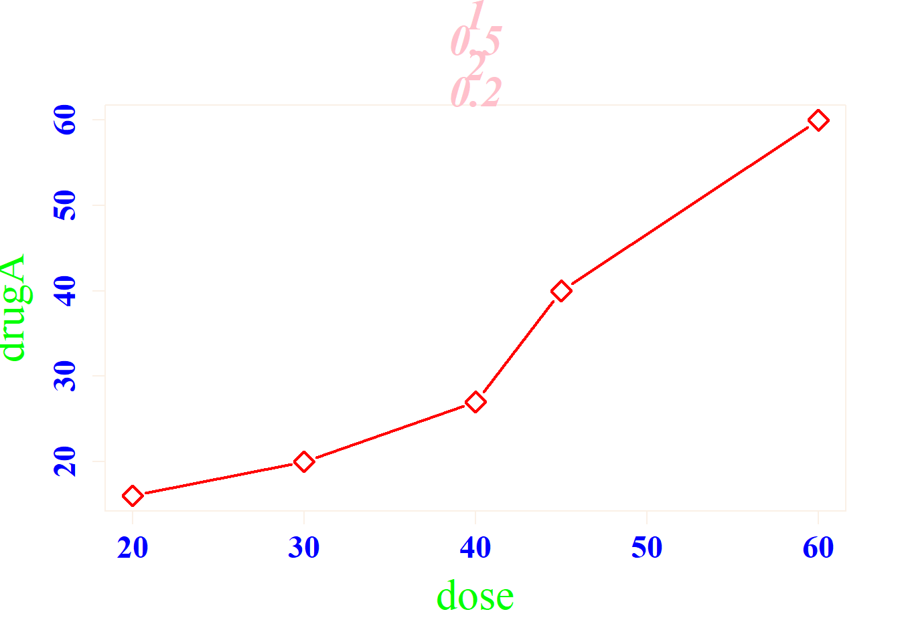

Chapter 2 基础绘图
使用R自带的graphic绘图包
Section 0 R_Studio中plot窗口的简单设置
dev.new() #打开独立的图形显示窗口，此后每创建新的布局，会打开新窗口
dev.off() #关闭独立的图形显示窗口
options() #函数 包含：scipen = 科学记数法开始的位数；digits = 小数点位数；add.smooth = 平滑程度，等
library(beginr) #这个包可以调用“plot+参数()”函数，查询每种参数的设置技巧
Section 1 plot()函数
绘制第一个简单图形
dose<-c(20,30,40,45,60)
drugA<-c(16,20,27,40,60)
plot(dose,drugA,type="b")  type参数表示绘图类型：b-带点的折线图，p-散点，l-仅线段，
type参数表示绘图类型：b-带点的折线图，p-散点，l-仅线段，
c-线段+空白点，o-线段+点(穿过)，h-直方图，s-阶梯图
plot()函数的图形参数，见图表
通过参数设置绘制复杂图形
dose<-c(20,30,40,45,60)
drugA<-c(16,20,27,40,60)
drugB<-c(15,18,25,31,40)
plot(dose,drugA,pch=5,type="b",cex=1.5,lty=1,lwd=2,col="red", #设置线型
col.axis="blue",col.lab="green",col.main="pink",col.sub="orange",fg="linen",bg="SeaGreen1", #设置颜色
cex.axis=1.5,cex.lab=2,cex.main=2,cex.sub=1.5, #设置标签缩放倍数
font.axis=2,font.lab=1,font.main=4,font.sub=2,ps=2,family="serif", #设置标签的字体样式
pin=c(2,1),mai=c(1,0.5,2,0.2)) #设置图形的尺寸
通过参数设置图形的标题、坐标轴信息
dose<-c(20,30,40,45,60)
drugA<-c(16,20,24,27,45)
plot(dose,drugA,type="b",
col="red",lty=2,pch=2,lwd=2,
main="Clinical Trials for DrugA", #主标题
sub="This is hypothetical data", #副标题
xlab="Dosage",ylab="Drug Response", #轴标题
xlim=c(10,60),ylim=c(0,70)) #轴长通过其他函数绘制自定义标题和坐标轴
#par()函数进行图形界面设置
#lines()、abline()等函数在当前绘图坐标系中增绘图形
#axis()、mtext()、title()等在当前绘图坐标系中添加绘图信息
x<-c(1:10)
y<-x
z<-10/x
opar<-par(no.readonly=TRUE) #设置可以写入的环境
par(mar=c(5,4,4,8)+0.1) #增加边界大小
plot(x,y,type="b",pch=21,yaxt="n",lty=3,ann=FALSE) #绘制x对y的图形
lines(x,z,type="b",pch=22,col="blue",lty=2) #绘制x对1/x的线
axis(2,at=x,labels=x,col.axis="red",las=2) #绘制针对y=x自定义坐标轴
axis(4,at=z,labels=round(z,digits=2),col.axis="blue",las=2,cex.axis=0.7,tck=-0.01) #绘制针对y=1/x的坐标轴
mtext("y=1/x",side=4,line=3,cex.lab=1,las=2,col="blue") #添加标题
title("An Example of Creative Axes",
xlab="X Value",
ylab="Y=X")par(opar) #还原默认环境（意味着再输入其他语句，不能直接修改当前绘图）添加参考线、图例等，需要用到“Hmisc”包,此包一并打包了“ggplot2”包
dose<-c(20,30,40,45,60)
drugA<-c(16,20,27,40,60)
drugB<-c(15,20,27,31,40)
opar<-par(no.readonly=TRUE)
par(lwd=2,cex=1.5,font.lab=2)
plot(dose,drugA,type="b",pch=15,lty=1,col="red",ylim=c(0,60),main="Drug A VS Drug B",xlab="Drug Dosage",ylab="Drug Response")
lines(dose,drugB,type="b",pch=17,lty=2,col="blue")
abline(h=c(30),lwd=1.5,lty=2,col="gray")
library(Hmisc)## Loading required package: lattice## Loading required package: survival## Loading required package: Formula## Loading required package: ggplot2##
## Attaching package: 'Hmisc'## The following objects are masked from 'package:base':
##
## format.pval, unitsminor.tick(nx=3,ny=3,tick.ratio=0.5)
legend("topleft",cex=0.5,inset=0.05,title="Drug Type",c("A","B"),lty=c(1,2),pch=c(15,17),col=c("red","blue"))#添加图例par(opar)给每个数据标点添加文本信息
以添加行名为例
attach(mtcars) #直接缓存数据集，后续不需要反复输入集名## The following object is masked from package:ggplot2:
##
## mpgplot(wt,mpg,main="Mileage vs Car Weight",
xlab="Weight",ylab="Mileage",
pch=18,col="blue")
text(wt,mpg,row.names(mtcars),cex=0.6,pos=4,col="red") #给数据点添加"行名"标签detach(mtcars) #结束缓存Section 2 一页多图 / 图形的组合
方法1：通过par()函数来设置图形区域，使用的参数为mfrow
attach(mtcars)## The following object is masked from package:ggplot2:
##
## mpgopar <-par(no.readonly=TRUE)
par(mfrow=c(2,2)) #绘制2*2四个图形区域，按行分布；mfcol则按列分布
plot(wt,mpg,main="Scatterplot of wt vs mpg")
plot(wt,disp,main="Scatterplot of wt vs disp")
hist(wt,main="Histogram of wt") #直方图
boxplot(wt,main="Boxplot of wt") #箱线图par(opar)
detach(mtcars)
#例2：3*1图形组合
attach(mtcars)## The following object is masked from package:ggplot2:
##
## mpgopar<-par(no.readonly=TRUE)
par(mfrow=c(3,1))
hist(wt)
hist(mpg)
hist(disp)
par(opar)
detach(mtcars)方法2：通过layout()函数来精确控制布局
# attach(mtcars)
# layout(matrix(c(1,1,2,3),2,2,byrow=TRUE), #一个2*2布局，但是头两个区域由图形1占据
# widths=c(1.5,1),heights=c(1,2))
# hist(wt)
# hist(mpg)
# hist(disp)
# detach(mtcars)第二行中左边图形的宽度是右边的1.5倍，第二行的图形高度是第一行的2倍
Section 3 详述其他图形绘制
直方图绘制
par(mfrow=c(2,2))
barplot(women$height)
#height是一个向量或者矩阵，当其为向量时，按其中数据绘制直方图
a<-c(1,2,3,4,5,6)
#垂直直方图
barplot(a,main="Simple Bar Plot",xlab="Improtved",ylab="Frequency")
#水平直方图
barplot(a,main="Simple Bar Plot",xlab="Improtved",ylab="Frequency",horiz=TRUE)#barplot(height)
#height为矩阵时，绘制的是堆砌条形图或分组条形图
library(vcd)## Loading required package: gridcounts<-table(Arthritis$Improved,Arthritis$Treatment)